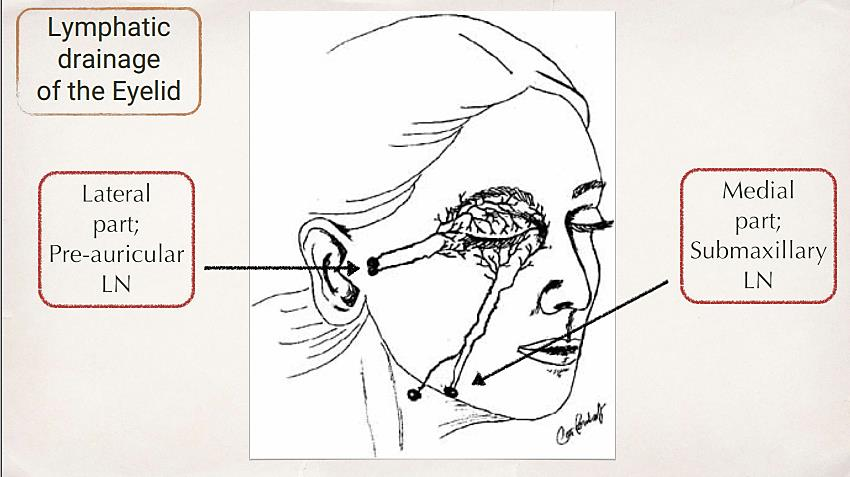

- From the lateral part: drain to the preauricular and parotid lymph nodes.
- From the medial part: drain to the submandibular lymph nodes.
- Finally, to the upper deep cervical lymph nodes.
Clinical The lymphatic watershed runs through the middle of the lid — lesions medial drain to the submandibular nodes, lateral to the parotid nodes.

Lateral → preauricular / parotid nodes · Medial → submandibular nodes